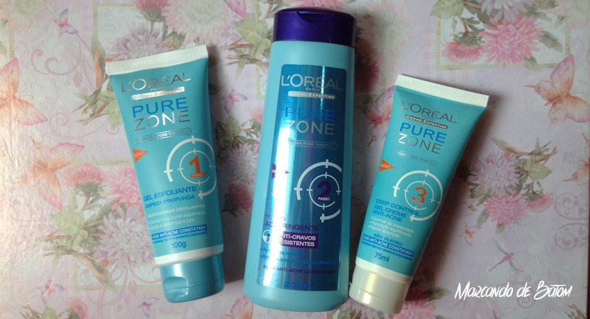
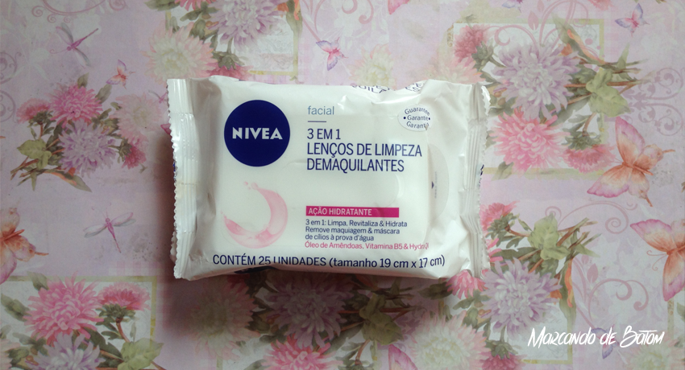

Cuidados diários e simples com a pele
Oi meninas! Tudo bem? Não preciso nem dizer o quanto eu gosto de maquiagem por que já deu pra perceber, né? rs É raridade eu sair de casa de cara limpa, e com todo esse tempo usando maquiagem todos os dias e praticamente o dia inteiro, reparei em alguns cuidados que fazem muita diferença no aspecto e saúde da minha pele. Coisas simples e práticas que não vão ocupar seu tempo no dia a dia.
Não usar muitos produtos para a mesma função
Se você é como eu era, de usar mais de um creme para hidratar a pele, fazer uma esfoliação ou qualquer outra função ao mesmo tempo, pare! Esses produtos tem um determinado tempo para fazer efeito, em média 2 meses pra começar a mostrar os resultados. Além de ser mais econômico, você terá certeza se o produto funciona ou não para você, e caso tenha alguma reação alérgica ou algo do tipo, você também saberá qual produto a causou.
Retirar a maquiagem corretamente
Retirar a maquiagem é muito importante. Antes eu tinha o péssimo hábito de não retirar antes de dormir, por estar muito cansada ou até mesmo por preguiça. Lavava o rosto no dia seguinte e ainda tacava mais maquiagem pra sair de casa. Minha pele sempre tinha aqueles manchinhas avermelhadas e aparecia uma espinha nova quase todos os dias, e o que eu fazia pra solucionar isso? Colocava uma camada bem grossa de base e pra mim estava tudo certo. Até fazer umas pesquisas e uma consulta no dermatologista e aprender que retirar a maquiagem direito no fim do dia é fundamental.
Hoje eu já tenho uma rotina básica: Assim que chego em casa, retiro o "grosso" com um lencinho demaquilante. No banho, lavo o rosto duas vezes com um sabonete facial e antes de dormir passo leite de rosas em um pedacinho de algodão no rosto inteiro.
A diferença que isso fez deu pra notar em questão de dias, a minha pele ficou mais lisinha, a manchinhas diminuiram e quase não aparece mais espinhas.
Lavar o rosto duas vezes ao dia
Como a minha pele é um pouquinho oleosa, eu achava que devia lavar o rosto muitas vezes pra me livrar da oleosidade e o que acontece é exatamente o contrário. Isso faz a pele produzir mais sebos e ficar ainda mais oleosa. Duas vezes é o recomendável sendo de manhã e a noite. Isso vale para todos os tipos de pele, tá?
Usar um hidratante antes da make
Outra coisa que notei que me fez um bem enorme e acredito que poucas pessoas saibam ou se lembrem é passar um hidratante antes da maquiagem. É como se fosse uma camada de proteção ou uma "barreira" na sua pele, evitando que seja agredida pela maquiagem. A maquiagem, por sua vez, vai ficar muito mais bonita e durar mais.
Esses cuidados são só alguns de muitos outros importantes, que eu quis compartilhar porque comecei a praticar a pouco tempo e fiquei chocada com o resultado da noite pro dia.
Vou listar alguns produtos que tem me ajudado nessa rotina:
Linha Pure Zone da L'oreal: Gel esfoliante (que uso uma vez por semana), Tônico adstringente (uso após o banho) e Gel creme (meu último passo na limpeza da pela diária e uso também antes da make). Esse produtos são de preferência para peles oleosas. Desde que comecei a usar minha pele melhorou muito.

Lenços demaquilantes Nivea: Eu uso todos os dias assim que chego em casa, para retirar o grosso da maquiagem. Ele é macio, é molhadinho e sequinho ao mesmo tempo, sei nem como explicar. Ele remove muito bem a maquiagem.

Durante o banho eu também uso o sabonete asepxia para pele oleosa, e o mousse de limpeza da Nivea, sinto que a minha pele fica limpíssima e macia.
E essas foram as minhas dicas básicas para os cuidados com a pele diariamente. Se você tem alguma dica que também é ótima, não deixe de compartilhar comigo deixando o seu comentário aqui em baixo, tá?